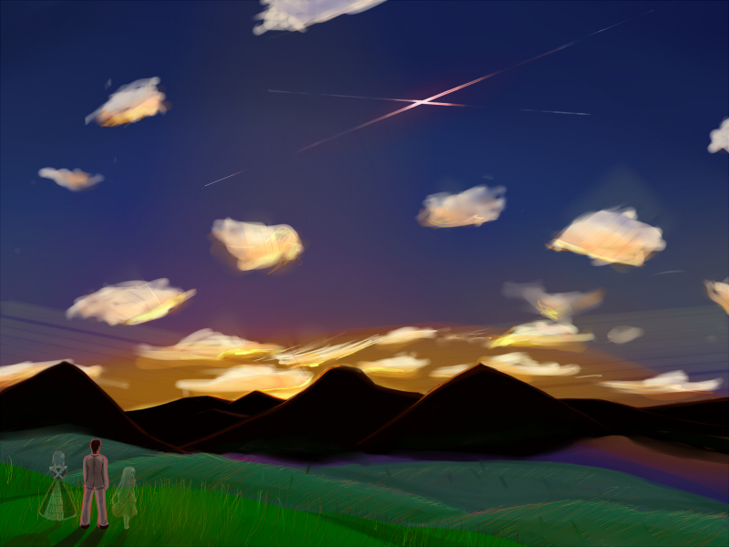

■終末の星■

Creator
稟くん
Comment
minori様より発売中の『eden*』の絵を描かせていただきました（※模写ではありません）。
一枚目に描いた絵が気に入らなかったので描こうと思ったのですが、今度はあれこれと考えすぎて描く時間がなくなってしまいました。
今回、初めて男を書いた気がします。難しいです。バン○リンの箱を見ながら頑張りました。
とは言え、この絵のメインはキャラではないので目立ちませんが・・・・。
毎度のことですが、背景って異常に難しい気がしますorz。
<<
>>